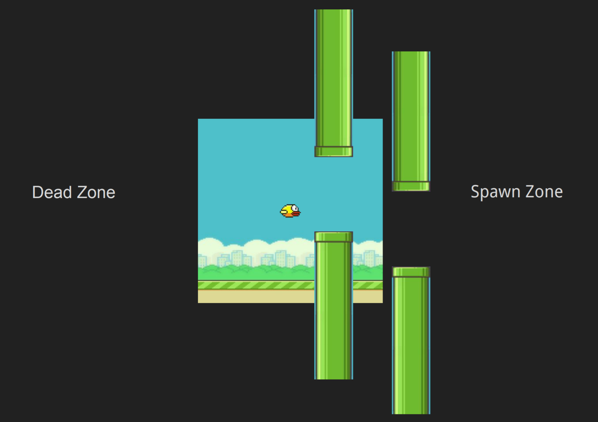
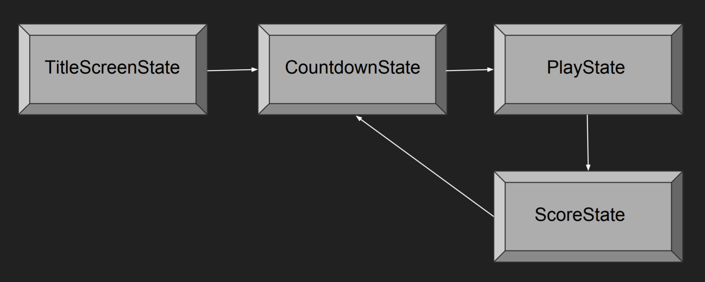

讲座 1: Flappy Bird
Today’s Topics
- Images (Sprites)
- How can we load images from 内存 to our game and draw them on the screen?
- Infinite Scrolling
- How can we make our game map appear to scroll infinitely from left to right without using all our 内存?
- “Games Are Illusions”
- We’ll see how camera trickery is often the crucial piece for bringing games to life.
- Procedural Generation
- Going hand in hand with infinite scrolling, we’ll learn how to use procedural generation to draw additional sprites (such as the pipes in Flappy Bird) to the screen as our game map scrolls from left to right.
- State Machines
- Last 周 we used a rudimentary “state machine” for pong, which was really just a string variable and a few
ifstatements in ourlove.update()function. This 周 we’ll see how we can actually use a state machine class to allow us to transition in and out of different states 更多 cleanly, and abstract this logic away from ourmain.luafile and into separate classes.
- Last 周 we used a rudimentary “state machine” for pong, which was really just a string variable and a few
- Mouse Input
- Last 周 we worked with keyboard input for pong, and this 周 we’ll see how to process mouse input for Flappy!
- Music
- Similarly to how we added sound effects to our game last 周, we’ll see how to add music to our game this 周 and ensure that it loops during game execution.
Downloading demo code
可选 readings for the 周
- How to Make an RPG, by Dan Schuller
- Game 编程 Patterns, by Robert Nystrom
bird0 (“The Day-0 Update”)
- At this point, you will want to have downloaded the demo code in order to follow along.
- bird0 simply draws two images to the screen- a foreground and a 背景.
Important Functions
-
love.graphics.newImage(path)- This function loads an image from a graphics file (JPEG, PNG, GIF, etc.), storing it in an object that we can draw to the screen.
-
love.graphics.draw(drawable, x, y)- This function draws an image to the screen at a given
xandyon our 2D Coordinate System. Recall that last 周 we usedlove.graphics.rectangle()to draw our paddles and ball. This 时间, we’ll want to draw actual images, so we’ll be using this function.
- This function draws an image to the screen at a given
- We also use many of the functions we used last 周:
-
love.load()andlove.draw()are particularly important for bird0, as they are what allow us to initialize our starting game state and draw our images, respectively.
-
- We are again making use of the
pushvirtual resolution library, which can be found below:- github.com/Ulydev/push (helpful documentation can be found in README.md)
Important Code
- You should be able to recognize most of the code in this update from last 周. As mentioned, at the top of
main.luawe are requiring thepushlibrary, so in addition to initializing variables for our window width and height we also initialize variables for our virtual resolution width and height.- We also define two new variables, which marks a small departure from what we did last 周:
local background = love.graphics.newImage('background.png') local ground = love.graphics.newImage('ground.png')Here we are defining two variables local to this file that contain image objects for our 背景 and our ground. This will come into play shortly.
- We also define two new variables, which marks a small departure from what we did last 周:
- Our use of
love.load()andlove.resize()should also look familiar from last 周. In the former we are again using nearest-neighbor filtering, setting the title of our window, and initializing our virtual resolution. Defining the latter allows us to resize our window. - We again define
love.keypressed(key)so that if the user presses theescapekey, we quit the game. - Finally, take a look at
love.draw():function love.draw() push:start() love.graphics.draw(background, 0, 0) love.graphics.draw(ground, 0, VIRTUAL_HEIGHT - 16) push:finish() endAs we did last 周, we make sure to wrap all our rendering logic inside of
push:start()andpush:finish()so that thepushlibrary can treat it with respect to our virtual resolution. The rendering logic, for now, consists of merely drawing our 背景 and group. We draw the 背景 at the top of the screen, and the ground at the bottom.
bird1 (“The Parallax Update”)
- bird1 allows us to “scroll” the 背景 and foreground along the screen in order to simulate motion.
What is Parallax Scrolling?
- Parallax Scrolling is an important concept in 游戏开发. It refers to the illusion of movement given two frames of reference that are moving at different rates.
- For a real life 示例, consider riding in a car and looking out the window. Suppose you’re driving near mountains and there are railings on the side of the road. You might notice that the railings 五月 appear to be moving much 更多 quickly in your frame of vision than the mountains.
- We want to simulate this behavior in our game with the ground and 背景 to give the appearance of motion.
Important Code
- In the code, we are using local variables to keep track of how much each image has scrolled (in order to know at which position to draw them) as well as how quickly each image is scrolling (so that the images can move at different speeds in order to produce Parallax Scrolling):
local background = love.graphics.newImage('background.png') local backgroundScroll = 0 local ground = love.graphics.newImage('ground.png') local groundScroll = 0 local BACKGROUND_SCROLL_SPEED = 30 local GROUND_SCROLL_SPEED = 60 local BACKGROUND_LOOPING_POINT = 413You 五月 be wondering why
local BACKGROUND_LOOPING_POINT = 413. In short, whenever we “loop” the scrolling of our 背景 image, we need to make sure we choose a point in the image where the loop effect won’t be noticeable. Here, we’ve chosen a point halfway through the width of the 背景 image that looks exactly like the beginning of the 背景 image. If this still seems confusing, be sure to run bird1 and use a different value for this variable (e.g., setlocal BACKGROUND_LOOPING_POINT = 270) so that you can observe the difference. - We now loop the scrolling effect in
love.update()so that we can continue reusing each image for as long as the game goes on:function love.update(dt) backgroundScroll = (backgroundScroll + BACKGROUND_SCROLL_SPEED * dt) % BACKGROUND_LOOPING_POINT groundScroll = (groundScroll + GROUND_SCROLL_SPEED * dt) % VIRTUAL_WIDTH endNotice how we’re updating our scroll position variables for each image by adding the corresponding scroll speed variable (scaled by DeltaTime to ensure consistent movement regardless of our computer’s framerate). The looping occurs by taking the modulo of the scroll position by our looping point. In the case of our ground image, we don’t bother choosing a looping point within the image since it looks so similar at every point, so the looping point is just the width of our virtual resolution.
- Lastly, we update
love.draw()to use the appropriate variables rather than static coordinates.function love.draw() push:start() love.graphics.draw(background, -backgroundScroll, 0) love.graphics.draw(ground, -groundScroll, VIRTUAL_HEIGHT - 16) push:finish() endIn order to “loop” each image, we are rendering a small portion of it at a 时间 and shifting it left each frame, until we reach the looping point and reset it 返回 to (0, 0). This means that as the scrolling takes place, the portions of the images that we’ve already seen will be to the left of the screen at a negative
xcoordinate until they are shifted 返回 right to recommence the looping effect.
bird2 (“The Bird Update”)
- bird2 adds a Bird sprite to our game and renders it in the center of the screen.
Important Code
- We create a Bird class and give it functionality to initialize and render itself.
Bird = Class{} function Bird:init() self.image = love.graphics.newImage('bird.png') self.width = self.image:getWidth() self.height = self.image:getHeight() self.x = VIRTUAL_WIDTH / 2 - (self.width / 2) self.y = VIRTUAL_HEIGHT / 2 - (self.height / 2) end function Bird:render() love.graphics.draw(self.image, self.x, self.y) endYou can see that we create the bird image object from
bird.png, which is our sprite’s image file which is now included in the 项目 directory, along withclass.lua. - In
main.lua, we only need to add a few lines to instantiate our bird object:Class = require 'class' require 'Bird' local bird = Bird() - And, inside
love.draw(), we can call our bird object’srendermethod to draw it to the screen:bird:render()
bird3 (“The Gravity Update”)
- bird3 introduces gravity into our game, which causes our Bird to 秋季 off the screen almost immediately.
Important Code
- The meat and bones of this update will exist in our Bird class, to which we add an arbitrary gravity attribute and an
updatemethod, which we’ll then call inmain.lua’slove.update(dt)function.local GRAVITY = 20 function Bird:update(dt) self.dy = self.dy + GRAVITY * dt self.y = self.y + self.dy endThe trick is to manipulate the bird’s position using DeltaTime, which we discussed in last 周’s 讲座, applying our gravity value to the Bird’s velocity and subsequently applying the updated velocity to the Bird’s position.
bird4 (“The Anti-Gravity Update”)
- bird4 allows our Bird to jump and thus remain airborne.
Important Code
- Our approach will be to toggle the
dyattribute between a negative and positive value in order to simulate jumping/flapping and falling.- Recall that our 2D Coordinate System has its origin at the top-left corner of the screen, so a positive
dyvalue will cause our Bird to 秋季, while a negativedyvalue will cause our Bird to rise (since the Bird’syvalue is higher at the bottom of the screen and lower at the top of the screen).
- Recall that our 2D Coordinate System has its origin at the top-left corner of the screen, so a positive
- Of special 笔记 is also the creation of a global input table in
main.luawhose purpose is to allow us to check whether particular keys have been pressed by the user without overloading the defaultlove.keypressed(key)function we’ve already defined inmain.lua. As a result, we can check inBird.luawhether the user has pressed the space bar without interfering with our check inmain.luafor if the user has pressedescto quit the game. - We’ll create our global input table in
love.load():love.keyboard.keysPressed = {} - 下一页, we’ll update it in
love.keypressed(key)so that whenever a key is pressed, we can add it to the table:function love.keypressed(key) love.keyboard.keysPressed[key] = true if key == 'escape' then love.event.quit() end end - At this point we can define a function that returns
trueif a given key has been pressed, andfalseotherwise:function love.keyboard.wasPressed(key) if love.keyboard.keysPressed[key] then return true else return false end endIt’s worth noting that the above function can be equivalently defined as:
function love.keyboard.wasPressed(key) return love.keyboard.keysPressed[key] end - With this input table, we can now add our jumping functionality to our Bird class such that when the user presses
spaceby setting the bird’sdyto an arbitrary negative value:function Bird:update(dt) self.dy = self.dy + GRAVITY * dt if love.keyboard.wasPressed('space') then self.dy = -5 end self.y = self.y + self.dy end - Finally, we make sure to clear the table after each frame in
love.update():love.keyboard.keysPressed = {}
bird5 (“The Infinite Pipe Update”)
- bird5 adds the Pipe sprite to our game, rendering it an “infinite” number of times.
Important Code
- Unsurprisingly, we create our Pipe sprite by modeling it with a Pipe class.
- Inside this class, we create an
initmethod that spawns a pipe at a random vertical position at the rightmost edge and within the lower quarter of the screen. We also create anupdatemethod that “scrolls” the Pipe to the left of the screen based on its 上一页 position, a negative scroll value, and itsdt. Lastly, we include functionality for rendering the Pipe to the screen:Pipe = Class{} local PIPE_IMAGE = love.graphics.newImage('pipe.png') local PIPE_SCROLL = -60 function Pipe:init() self.x = VIRTUAL_WIDTH self.y = math.random(VIRTUAL_HEIGHT / 4, VIRTUAL_HEIGHT - 10) self.width = PIPE_IMAGE:getWidth() end function Pipe:update(dt) self.x = self.x + PIPE_SCROLL * dt end function Pipe:render() love.graphics.draw(PIPE_IMAGE, math.floor(self.x + 0.5), math.floor(self.y)) endIt’s notable to mention that we are never creating multiple Pipe sprites. Rather, we are always re-rendering the same Pipe sprite we created in line 15. This helps us save 内存 while accomplishing the same goal.
- We also make use of a
spawnTimervalue which we create inmain.luaorder to determine how often to spawn a new Pipe on the screen:local spawnTimer = 0 - And then, in
love.update():spawnTimer = spawnTimer + dt if spawnTimer > 2 then table.insert(pipes, Pipe()) print('Added new pipe!') spawnTimer = 0 end ... for k, pipe in pairs(pipes) do pipe:update(dt) if pipe.x < -pipe.width then table.remove(pipes, k) end endWe spawn a new pipe every two seconds, and remove it from the table once it’s no longer visible past the left edge of the screen.
- Finally, in
love.draw(), we call therenderfunction of each pipe currently in the table:for k, pipe in pairs(pipes) do pipe:render() end
bird6 (“The PipePair Update”)
-
bird6 spawns the Pipe sprites in “pairs”, with one Pipe facing up and the other facing down.

Important Code
- Previously, in bird5, we were only worried 关于 spawning individual Pipes, so having a simple Pipe class sufficed. However, now that we want to spawn pairs of Pipes, it makes sense to create a PipePair class to tackle this problem.
PipePair = Class{} local GAP_HEIGHT = 90 function PipePair:init(y) self.x = VIRTUAL_WIDTH + 32 self.y = y self.pipes = { ['upper'] = Pipe('top', self.y), ['lower'] = Pipe('bottom', self.y + PIPE_HEIGHT + GAP_HEIGHT) } self.remove = false end function PipePair:update(dt) if self.x > -PIPE_WIDTH then self.x = self.x - PIPE_SPEED * dt self.pipes['lower'].x = self.x self.pipes['upper'].x = self.x else self.remove = true end end function PipePair:render() for k, pipe in pairs(self.pipes) do pipe:render() end end - The result of having a PipePair class is that we replace a lot of our 上一页 Pipe logic in
main.luawith analogous PipePair logic. The implications of this are that the flow of ourmain.luafile need not change drastically, but with the caveat that now we need to accommodate for PipePairs rather than individual Pipes. - In our case, we can mimic the Pipe class to an extent, as long as we provide logic for ensuring a reasonable gap height between the Pipes, as well as accurate
yvalues for our sprites, since we will be mirroring the top Pipe. Be sure to 阅读 carefully through the changes inmain.lua, paying 关闭 attention to the comments!
bird7 (“The Collision Update”)
- bird7 introduces collision detection, pausing the game when a collision occurs.
Important Code
- The pausing of the game is handled by toggling a local boolean variable
scrolling(checked inlove.update(dt)) upon collision detection. - The collision detection itself is handled within our Bird class (it’s essentially the same AABB Collision Detection algorithm we saw last 周), but with some leeway in order to give the user a little 更多 leniency.
function Bird:collides(pipe) if (self.x + 2) + (self.width - 4) >= pipe.x and self.x + 2 <= pipe.x + PIPE_WIDTH then if (self.y + 2) + (self.height - 4) >= pipe.y and self.y + 2 <= pipe.y + PIPE_HEIGHT then return true end end return false end
bird8 (“The State Machine Update”)
-
bird8 modularizes our code as a State Machine:

While our eventual goal is the above, this update lays the foundations with the following states: BaseState, TitleScreenState, and PlayState.
Important Code
- We manage all our game states using an overarching StateMachine module, which handles the logic for initializing and transitioning between them.
- The TitleScreenState will transition to the PlayState via keyboard input. The BaseState is a skeleton for the other states- it defines empty methods and passes them on via 继承.
- Of particular 笔记 in
main.luais the creation of ourgStateMachinetable to hold function calls to our different states:... require 'StateMachine' require 'states/BaseState' require 'states/PlayState' require 'states/TitleScreenState' ... function love.load() ... gStateMachine = StateMachine { ['title'] = function() return TitleScreenState() end, ['play'] = function() return PlayState() end, ['score'] = function() return ScoreState() end } gStateMachine:change('title') ... endBy representing our game states as modules, we vastly simplify the logic in our
main.luafile. Now, each major part of our code will be in its own module, and each state can be accessed through our global state machine table. - Be sure to 阅读 carefully through the new modules, paying 关闭 attention to the comments, to understand how our
main.luahas been simplified so cleanly! You should see that the PlayState should contain much of the logic previously inmain.lua.
bird9 (“The Score Update”)
- bird9 introduces a new state, ScoreState, to help keep track of the score.
Important Code
- Once a collision is detected, the PlayState will transition to the ScoreState, which will display the user’s final score and transition 返回 to the PlayState if the “enter” key is pressed. 笔记 our addition to the
PlayState:update()function to implement this transition logic:for k, pair in pairs(self.pipePairs) do for l, pipe in pairs(pair.pipes) do if self.bird:collides(pipe) then gStateMachine:change('score', { score = self.score }) end end end if self.bird.y > VIRTUAL_HEIGHT - 15 then gStateMachine:change('score', { score = self.score }) end - The score itself is also tracked in
PlayState:update()by incrementing a score counter each 时间 the bird flies successfully through a PipePair.for k, pair in pairs(self.pipePairs) do if not pair.scored then if pair.x + PIPE_WIDTH < self.bird.x then self.score = self.score + 1 pair.scored = true end end pair:update(dt) end - Logic for displaying the score to the screen during the PlayState is added to the
PlayState:render()function:function PlayState:render() ... love.graphics.setFont(flappyFont) love.graphics.print('Score: ' .. tostring(self.score), 8, 8) ... end - The ScoreState itself is implemented as an additional module with logical implementations for the empty methods in BaseState:
ScoreState = Class{__includes = BaseState} function ScoreState:enter(params) self.score = params.score end function ScoreState:update(dt) if love.keyboard.wasPressed('enter') or love.keyboard.wasPressed('return') then gStateMachine:change('play') end end function ScoreState:render() love.graphics.setFont(flappyFont) love.graphics.printf('Oof! You lost!', 0, 64, VIRTUAL_WIDTH, 'center') love.graphics.setFont(mediumFont) love.graphics.printf('Score: ' .. tostring(self.score), 0, 100, VIRTUAL_WIDTH, 'center') love.graphics.printf('Press Enter to Play Again!', 0, 160, VIRTUAL_WIDTH, 'center') end
bird10 (“The Countdown Update”)
- bird10 introduces yet another state, CountdownState, whose purpose is to give the user 时间 to get ready before being thrust into the game.
Important Code
- First, we add CountdownState to our global state machine in
main.lua:... require 'states/CountdownState' ... function love.load() ... gStateMachine = StateMachine { ... ['countdown'] = function() return CountdownState() end, ... } ... end - The CountdownState is implemented as another module and it merely displays a 3-second countdown on the screen before play begins:
CountdownState = Class{__includes = BaseState} COUNTDOWN_TIME = 0.75 function CountdownState:init() self.count = 3 self.timer = 0 end function CountdownState:update(dt) self.timer = self.timer + dt if self.timer > COUNTDOWN_TIME then self.timer = self.timer % COUNTDOWN_TIME self.count = self.count - 1 if self.count == 0 then gStateMachine:change('play') end end end function CountdownState:render() love.graphics.setFont(hugeFont) love.graphics.printf(tostring(self.count), 0, 120, VIRTUAL_WIDTH, 'center') end - As such, we modify our code in
TitleScreenState.luasuch that TitleScreenState transitions to CountdownState rather than directly to PlayState. - Then, in
CountdownState.luawe transition to PlayState once the countdown reaches 0. - In
PlayState.lua, we ensure that upon collision, we transition to ScoreState. - Finally, in
ScoreState.lua, we transition 返回 to CountdownState on keyboard input.
bird11 (“The 音频 Update”)
- bird11 adds some music and sound effects to the game
Important Code
- We initialize a sounds table in
love.load(), taking care to include the sound files we reference in our 项目 directory, then set themusicsound to loop indefinitely and begin playing it:sounds = { ['jump'] = love.audio.newSource('jump.wav', 'static'), ['explosion'] = love.audio.newSource('explosion.wav', 'static'), ['hurt'] = love.audio.newSource('hurt.wav', 'static'), ['score'] = love.audio.newSource('score.wav', 'static'), ['music'] = love.audio.newSource('marios_way.mp3', 'static') } sounds['music']:setLooping(true) sounds['music']:play() - Lastly, we play the remaining sound effects in the PlayState module (jumps, score increases, collisions, etc.).
bird12 (“The Mouse Update”)
- bird12 adds mouse interactivity to the game in order to 更多 closely resemble the original Flappy Bird iOS game.
- This update is left as an at-首页 练习, but do take 笔记 of the following important function:
-
love.mousepressed(x, y, button)- This function is a callback fired by LÖVE2D every 时间 a mouse button is pressed; it also gives us the
(x, y)of where the mouse cursor was at the 时间 of the button press.
- This function is a callback fired by LÖVE2D every 时间 a mouse button is pressed; it also gives us the
- If stuck on this 练习, feel free to 打开 up bird12 to take a look at the 实现细节. Be sure to 阅读 the comments carefully!